Combinem quinze datasets oficials en un únic master_dataset per explorar la relació entre desenvolupament econòmic, emissions, comerç internacional i salut. Quins països han crescut sense augmentar les seves emissions? On s'amaga la contaminació quan es deslocalitza?
Històricament cada salt de productivitat ha vingut acompanyat d'un salt d'emissions. Però l'última dècada introdueix una possibilitat nova — el desacoblament: països que augmenten el seu PIB mentre redueixen les seves emissions.
Aquest projecte explora dos blocs de preguntes. Primer, què mostren les dades sobre la relació entre desenvolupament i emissions. Segon, quins països escapen del patró i com ho aconsegueixen.
La pregunta clau no és quant emet cada país, sinó quina relació té cada país entre la seva riquesa, la seva petjada de carboni i la salut dels seus habitants. Marc analític del projecte
El cor del projecte és el master_dataset.csv — una taula unificada de 23.408 files que combina quinze datasets independents sota una clau comuna (país, any). Sense aquesta fusió, no podríem creuar el PIB amb les emissions, ni les emissions amb l'esperança de vida, ni la riquesa amb la desigualtat.
Cada font té el seu propi format, nomenclatura i interval temporal. La integració ha exigit normalitzar noms de països (USA → United States), interpolar buits temporals, completar valors nuls allà on era estadísticament prudent, i acordar una sola unitat de mesura per indicador.
Descàrrega de quinze fonts oficials — OWID, World Bank, WHO, UNDP.
Tractament de nulls, noms de països, formats temporals, unitats coherents.
Join per (Entity, Year). Selecció de variables rellevants.
Càlcul de variables derivades: CO₂/càpita, intensitat carboni, balanç comercial.
Variables del master_dataset: co2_prod co2_cons co2_prod_pc co2_cons_pc co2_trade_balance carbon_intensity population gdp_pc hdi gini life_exp resp_death_rate exports_usd exports_share_gdp energy_twh pct_lowcarbon forest_change_ha
Abans de mirar gràfics, hem formulat hipòtesis. La idea: que els gràfics no decidissin la història, sinó que la confirmessin o refutessin amb evidència empírica.
Existeix una relació positiva entre el PIB per càpita i les emissions de CO₂ per càpita.
Els països amb un HDI més alt tendeixen a generar més emissions de CO₂.
Els països desenvolupats són els principals responsables de les emissions històriques acumulades.
Existeix una relació entre emissions de CO₂ i qualitat de vida (esperança de vida).
El comerç internacional contribueix al desplaçament de les emissions cap a països exportadors.
Les noves tecnologies (data centers, IA) contribueixen de manera creixent a les emissions globals.
Cap visualització resumeix millor el segle XX i XXI que aquesta. Entre 1850 i 2024, les emissions globals de CO₂ han passat de pràcticament zero a més de 37 gigatonnes anuals. Cada esdeveniment històric deixa una empremta visible al gràfic.
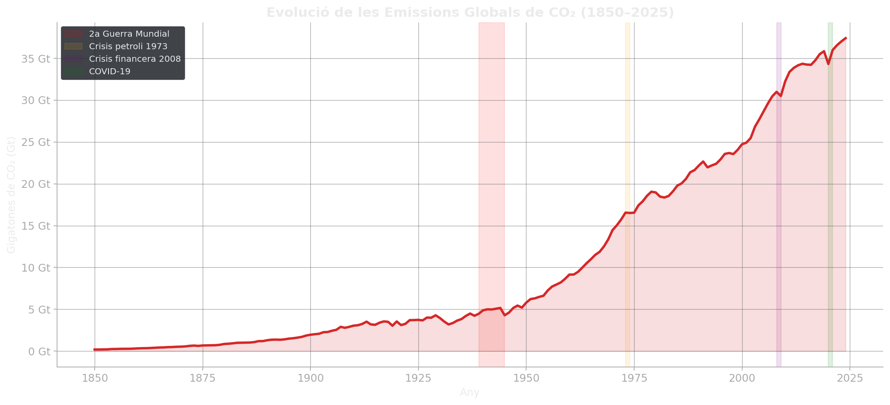
El 88% del CO₂ acumulat des de 1850 prové de menys del 20% de la població mundial.
Per entendre qui ha generat aquestes emissions, mirem ara els països responsables del total acumulat històric, dels emissors actuals, i dels que emeten més per càpita.
La història del CO₂ no es reparteix equitativament. Una desena de països concentren més de tres quartes parts de tot el CO₂ acumulat des de l'inici de la industrialització.
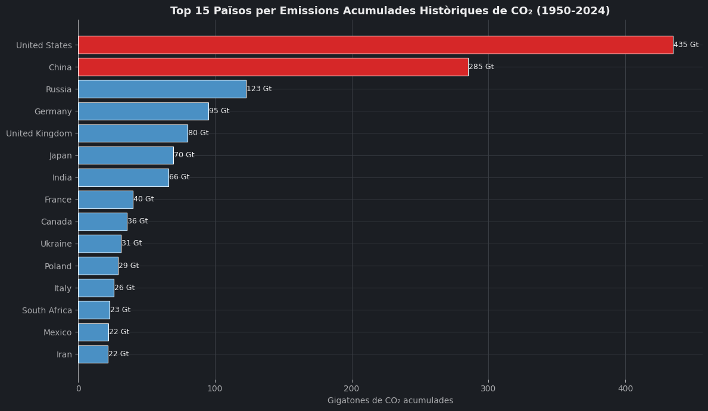
Però el rànquing actual ha canviat notablement. Mentre els Estats Units i Europa van dominar el segle XX, la Xina ha passat a ocupar les primeres posicions en el segle XXI.
interactive · bar chart race
interactive · mapa animat
La mateixa dada en el temps revela el moment exacte del relleu: cap al 2006, la corba de la Xina creua la dels Estats Units i no para.
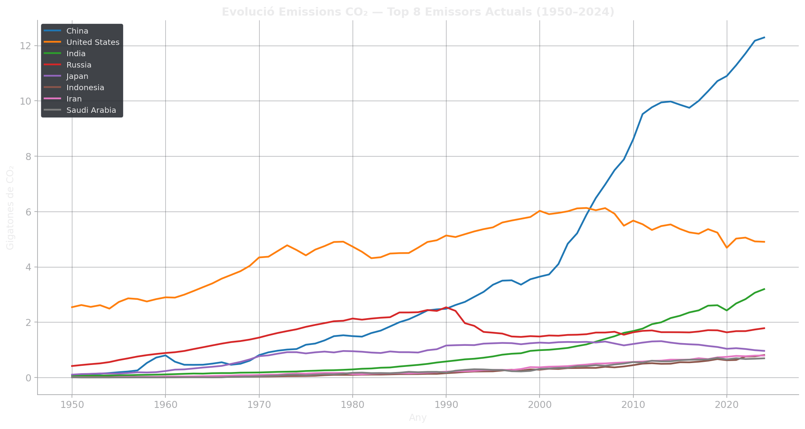
L'absoluta no ho és tot. Mirat per habitant, el panorama canvia: petites economies riques del Golf Pèrsic o països amb indústries energètiques fortes, superen els gegants industrials.
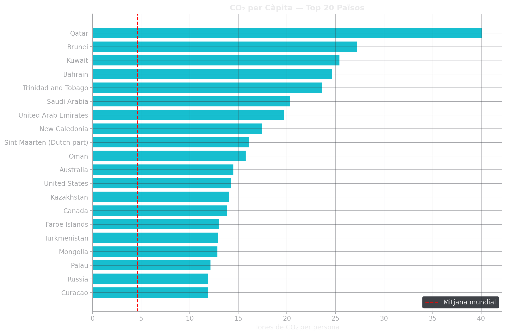
Fins ara hem vist trajectòries. Aquí parem el temps i veiem el paisatge complet d'un sol any: cada rectangle és un país, i la seva superfície és les seves emissions de CO₂. La Xina i els EUA junts ocupen més de la meitat del mapa.
interactive · treemap
El treemap mostra el pes absolut. El sunburst afegeix una capa més: organitza els mateixos països per continent a l'anell interior, i desplega cada país a l'anell exterior. D'un cop d'ull es veu quin continent domina i, dins seu, quin país concentra les emissions.
interactive · sunburst
Quatre sectors expliquen la immensa majoria de la petjada global: energia, indústria, agricultura i transport. La seva proporció ha canviat amb el temps, però el seu pes conjunt es manté inamovible.
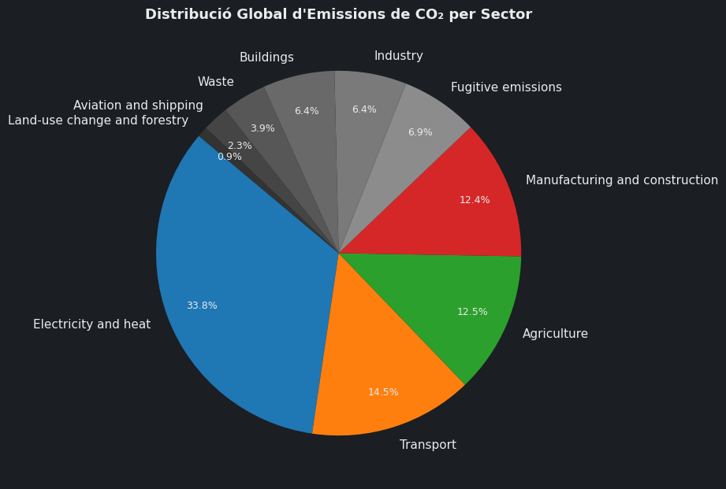
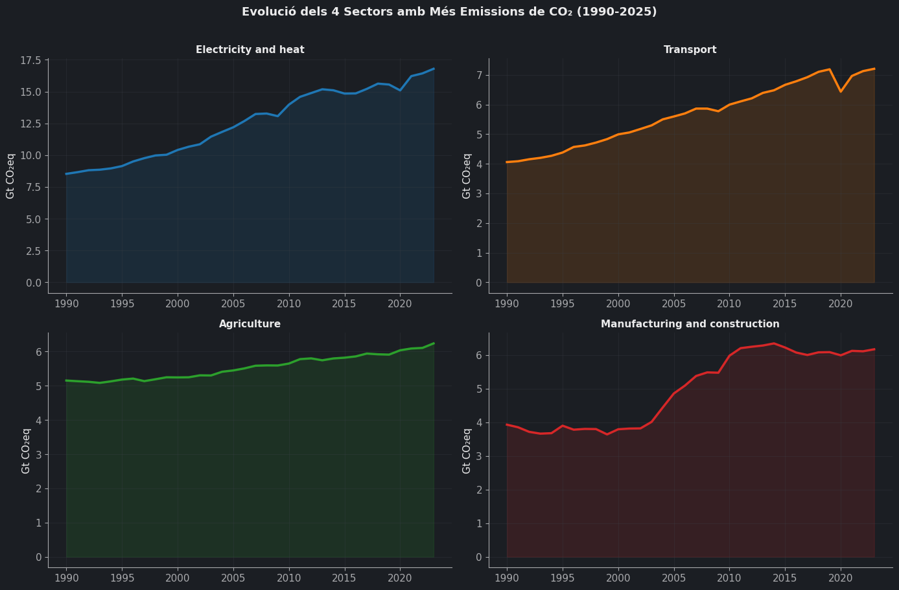
Produir i consumir no és el mateix. Quan un país fabrica béns per exportar, les emissions queden registrades al seu territori però la demanda és aliena. El mapa de producció versus consum i el diagrama de fluxos revelen aquesta asimetria: algunes economies absorbeixen contaminació invisible darrere de cada importació.
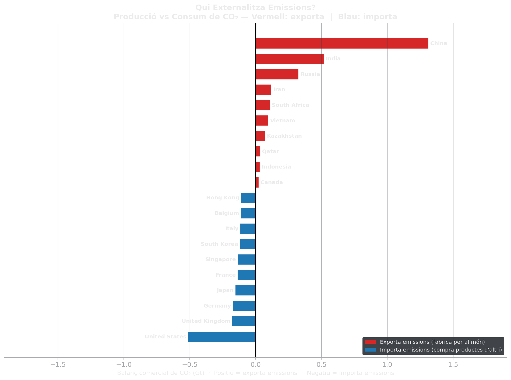
Emetre no és el mateix que acumular. L'oceà i la terra absorbeixen part del CO₂, però cada any que passa, les fonts creixen més ràpid que els sistemes d'absorció. La diferència — el que no s'absorbeix — s'acumula a l'atmosfera. Aquest gràfic mostra per què la concentració atmosfèrica de CO₂ continua pujant malgrat que els ecosistemes fan la seva feina.
interactive · sources & sinks
Les Hipòtesis 1 i 2 es posen a prova aquí: la riquesa econòmica (PIB) i el desenvolupament humà (HDI) es correlacionen amb emissions per càpita. La pregunta interessant no és si hi ha correlació, sinó quant es desvien alguns països d'aquesta corba.
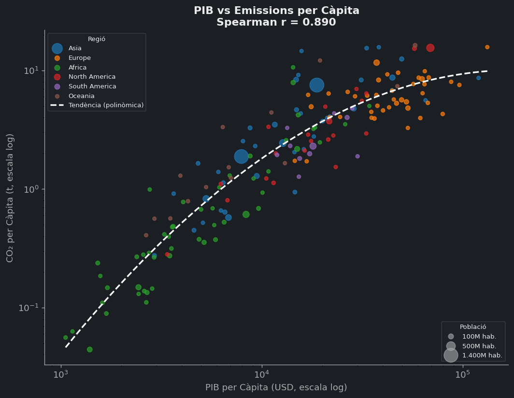
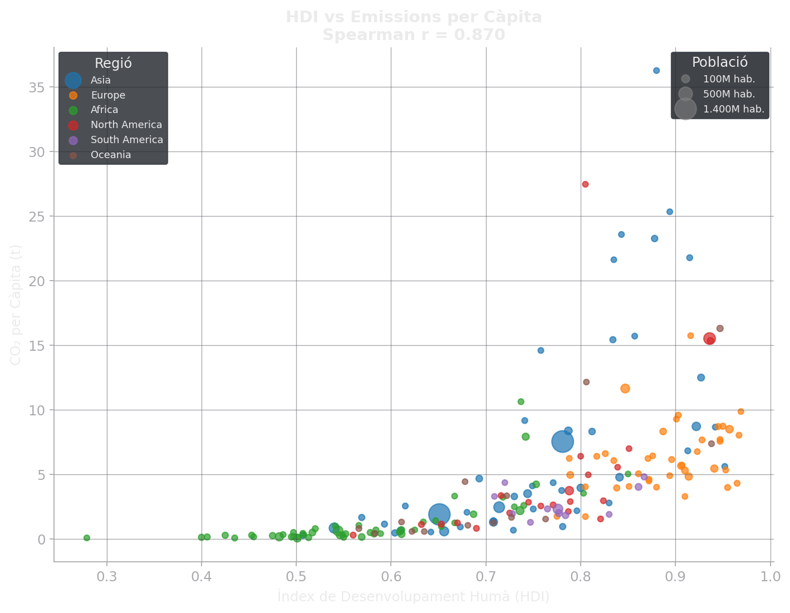
El model dominant de desenvolupament humà encara passa per cremar més. Però la dispersió entorn la corba demostra que no és l'únic camí possible. Anàlisi creuada Hipòtesi 1 + 2
Quan un país occidental "redueix" les seves emissions, sovint el que ha reduït és la seva indústria pesant — que s'ha traslladat a Àsia. La Hipòtesi 5 explora aquest desplaçament: les emissions de producció (qui les fa) contra les de consum (qui les utilitza).
Per evidenciar més la Hipòtesi 5, mirem la relació entre exportacions econòmiques i emissions. El que un país exporta determina la seva petjada de carboni nacional.
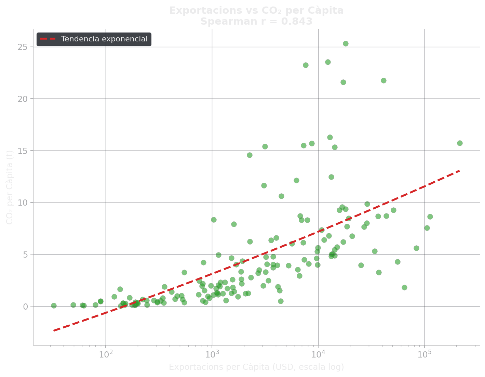
Un dels resultats més contraintuïtius del projecte: els països amb més desigualtat sovint tenen menys emissions per càpita. Però això no és bona notícia ambiental — és pobresa energètica estructural. La mitjana baixa perquè la gran majoria de la població no té accés ni capacitat de consum.
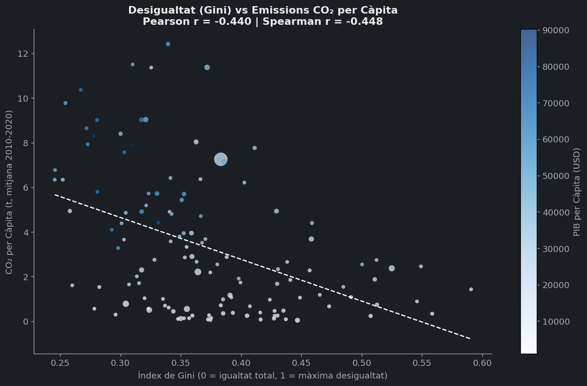
Una de les troballes més delicades del projecte: la correlació positiva entre emissions per càpita i esperança de vida. No és que el CO₂ allargui la vida — és que tots dos són indicadors d'un mateix fenomen subjacent: nivell de desenvolupament.
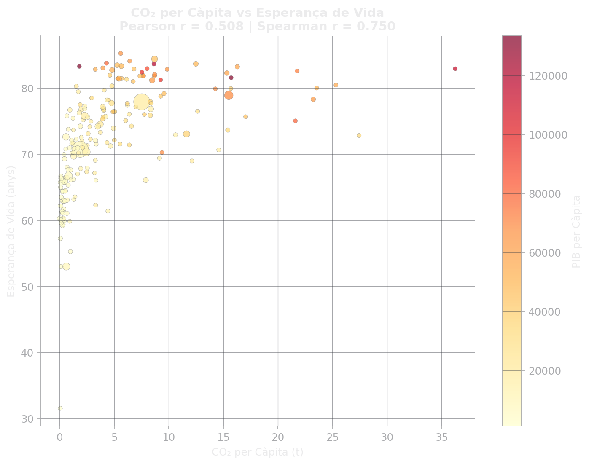
Un algorisme de clustering identifica quatre grans tipologies de països: rics i contaminants, rics i nets, en desenvolupament, i d'ingressos baixos. La separació no és intuïtiva — és empírica, treta de les dades.
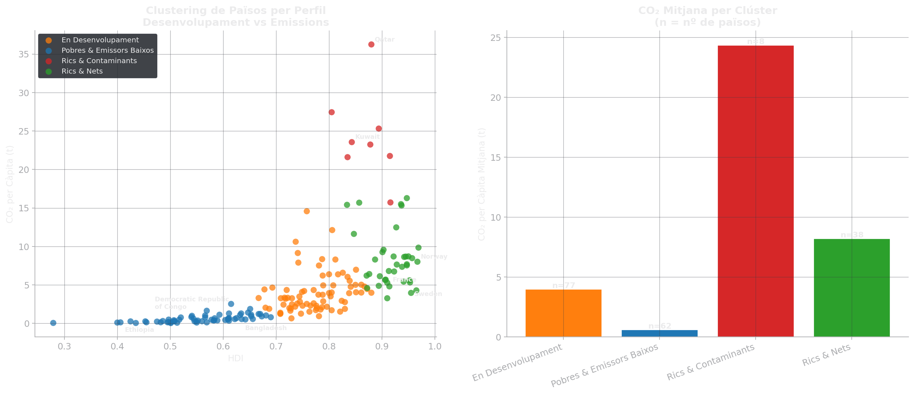
Els clústers anteriors eren punts en un pla. Ara els mateixos països, sobre el mapa: cada color combina HDI i CO₂ per càpita simultàniament. Els verds foscos concentren alt desenvolupament amb alta petjada. Els blaus, alt HDI amb baix CO₂ — el model que tots els altres haurien de seguir.
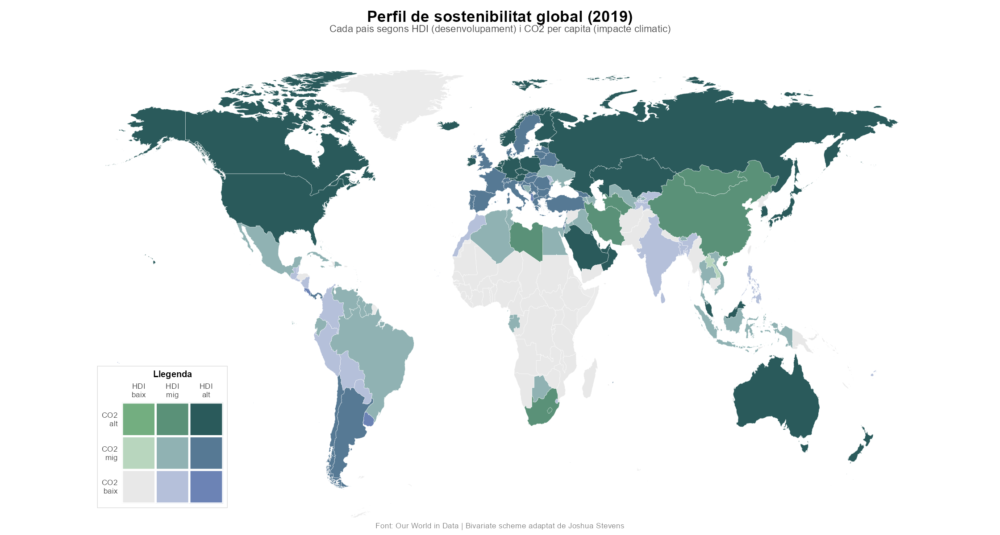
Si reduïm les nou variables del dataset a només dues dimensions amb un PCA, ja es veu el mateix patró: l'eix horitzontal és essencialment "nivell de desenvolupament", i el vertical separa com de net es desenvolupa un país.
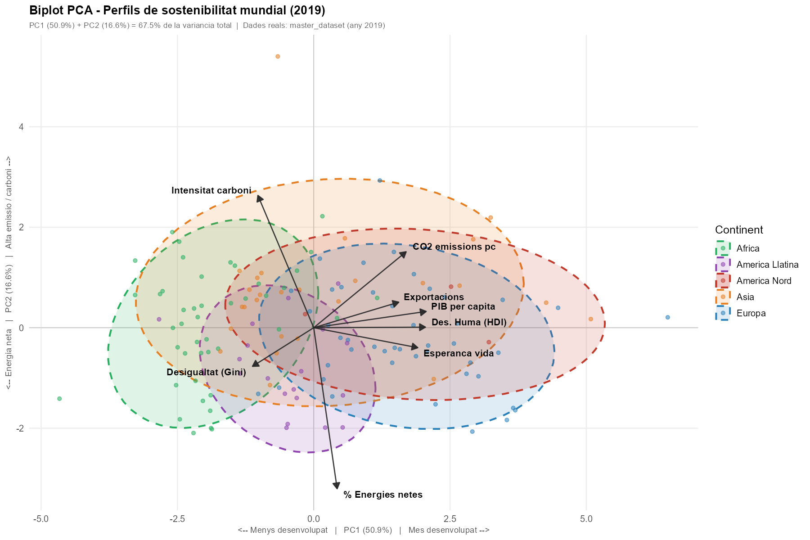
Fins aquí hem explorat les variables una per una. El SPLOM permet veure-les totes alhora: cada cel·la és la relació entre dues variables, la diagonal mostra la distribució de cada una, i els coeficients de Spearman quantifiquen la força de cada vincle. D'un sol cop d'ull: CO₂, riquesa i salut estan fortament correlacionats — però Gini trenca el patró.
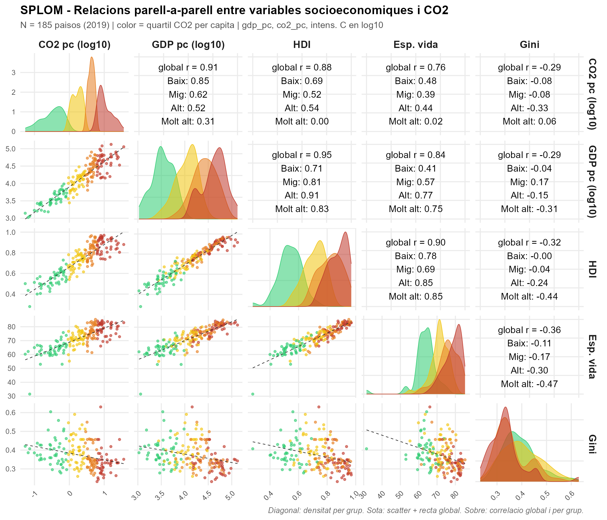
El correlograma mostra la mateixa informació de manera més resumida. Vermell intens és correlació positiva forta; blau intens, negativa. PIB i HDI: 0,96 — gairebé la mateixa variable. Exportacions i desenvolupament: 0,91. La riquesa, la salut i el comerç formen un sol bloc. Gini és l'excepció: correlaciona poc amb tot. La desigualtat és transversal — n'hi ha en països rics i pobres, nets i contaminants.
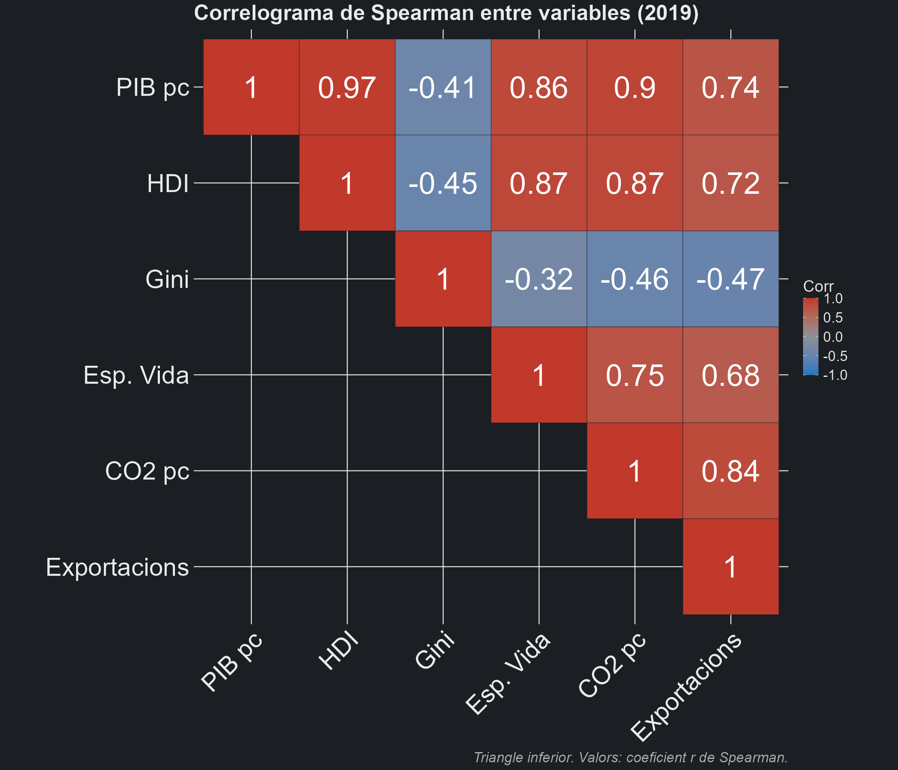
Si volem provar que el desacoblament és real, necessitem un cas concret. Suècia ha arribat al 98,5% d'electricitat de fonts netes mantenint un PIB per càpita superior a la mitjana europea. Comparem el seu camí amb el d'Espanya.
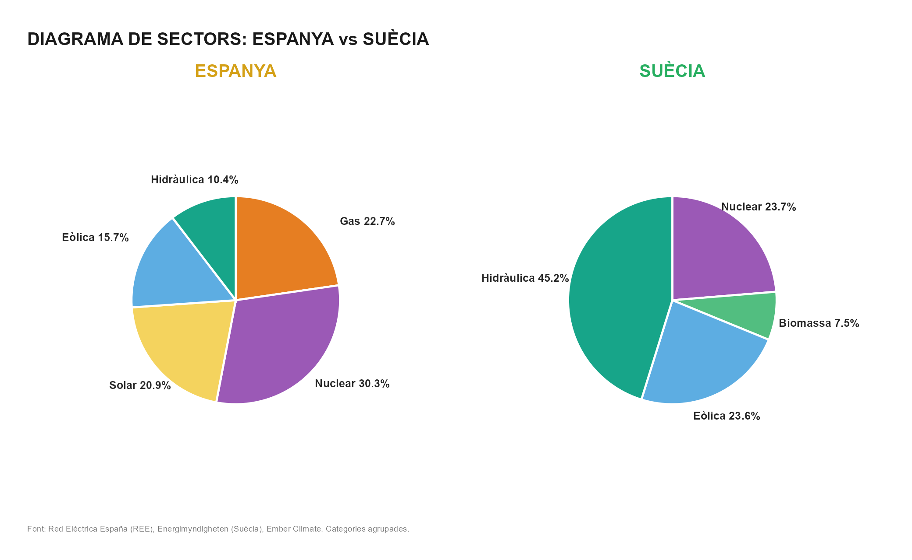
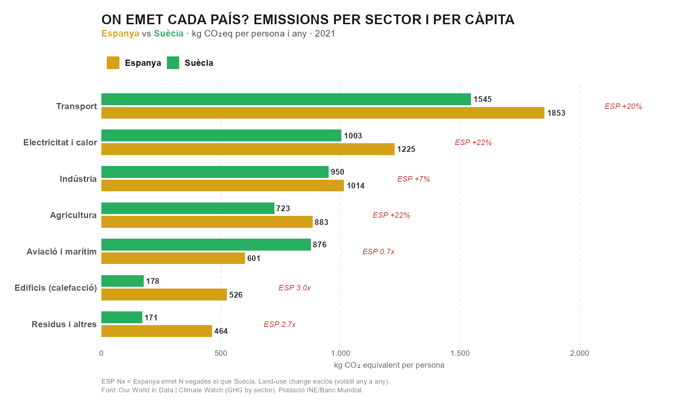
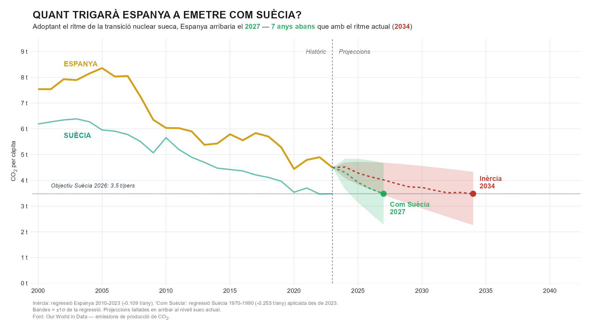
El desacoblament no és una utopia. És una política pública sostinguda durant trenta anys.
PIB i CO₂/càpita correlacionen positivament (Spearman 0,895). Però la dispersió mostra que no és l'únic camí — països rics amb baixa petjada existeixen.
HDI i emissions també correlacionen (Spearman 0,870). Mateix patró: a major desenvolupament, més emissions, amb desviacions notables al nord d'Europa.
Els EUA i Europa concentren més del 75% del CO₂ acumulat des de 1850. La responsabilitat històrica és asimètrica.
Hi ha correlació (Spearman 0,750) però no és causal: ambdues són conseqüència del desenvolupament econòmic. El PIB és el factor de confusió.
Xina és exportador net d'emissions; EUA i Europa, importadors nets. El comerç internacional sí desplaça emissions cap a economies productores.
EUA i Xina alimenten el seu núvol majoritàriament amb fonts no renovables — 73% i 99,7%.
Aquest projecte forma part de l'assignatura Visualització de Dades del Grau d'Enginyeria de Dades (UAB). Els repositoris de codi i dades es troben públics a GitHub.